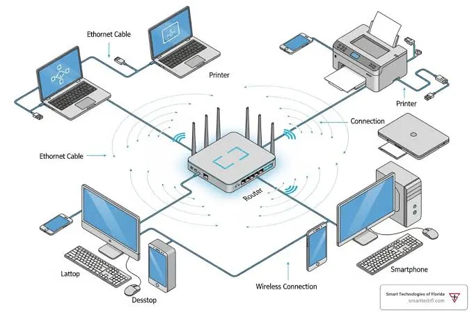
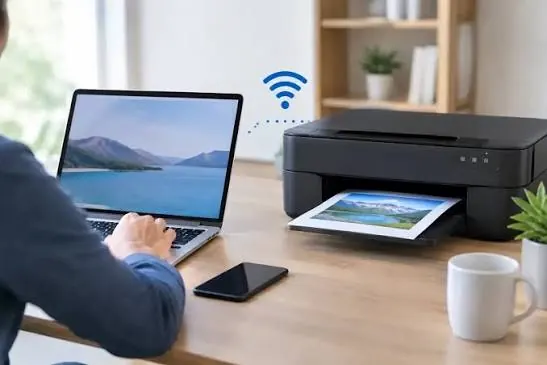

Office & business
How to Set Up a Network Printer for Your Whole Office
A practical guide to setting up a shared office printer over Ethernet or Wi-Fi, installing drivers, managing access and troubleshooting common connection issues.
Introduction
Having a networked printer can make your office printing easier by allowing multiple staff members to print from their own computers without any direct USB connection. This can help reduce the amount of cables you have in your office and allow for a collaborative workflow. In order to get the best results from a printer you will need to ensure it is positioned correctly, connected to the right network, with the correct drivers and that it is accessible to authorised users.
Depending on the make of the printer, operating system and network the steps will vary slightly. To generalise, in a managed environment try to contact your IT administrator to ensure you aren’t causing any issues with your security settings. The steps are:

1) Connecting to the Correct Network
Most office printers will use either an Ethernet or Wi-Fi connection. An Ethernet connection requires a network cable to be connected to the printers LAN port, connecting to either the router, switch or network point in the wall. This can be a good option for a shared printer in an office as there will be no issues with connectivity due to it being a physical connection. Using a Wi-Fi connection can be more flexible if there aren’t enough cables in an area but could cause issues with distance, interference and network settings.
Ensure that your printer will be positioned in areas where staff can easily access it to print and complete documents without obstructing any walkways. Ensure that there is appropriate power, airflow and network connection available. If you have a busy office then using an Ethernet connection may be preferable.
Avoid connecting the printer to a guest Wi-Fi network unless advised by your organisations IT team. This can cause the printer to be isolated from other devices.
2) Printer & Network Details
Before you start ensure you have the full model name of the printer. Locate your installation instructions and ensure the printer is in good working condition with paper, correct consumables and that it is showing ready. If you are using a new printer then remove any packaging and fit your cartridges/toner as advised by the manufacturer.
For a Wi-Fi connection, ensure you have the details for the correct network name and password. If using an Ethernet connection ensure you know which network point/switch you should be connecting to. In a business environment, ensure you know if you need to assign a static IP address, a specific VLAN or if you need to register the printer with your print server. Don’t guess.
To help you further, decide who will be administering the printer. Who will be using it? Will you want to limit colour or double sided printing? You can make these decisions before adding to your staff computers.
3) Connecting to Ethernet/Wi-Fi
Connect the network cable to the LAN port on your printer. Connect to an approved network point or switch. Once connected the network light should illuminate. Open up the printer menu and ensure the printer has received settings from the network.
Open up the Network/Wi-Fi menu on your printer and select the network you would like to connect to. Enter your password carefully. Some printers allow you to connect via a manufacturer application or secure Wi-Fi setup. Use the official application and follow the instructions for your model.
Once connected, if your printer has the option to view/print a network report, do so. Note down the IP address and ensure it is connected. If it is not connecting to the network, double check the network name/password and ensure the router/access point allows the device to connect.

4) Assigning a Stable Network Address
Your printer may have an automatic IP address assigned to it by the network’s DHCP. This can cause issues if the IP address changes as some computers/print queues may not be able to find the printer depending on how it was installed. Businesses often use a DHCP reservation or managed IP plan so that the printer can be found.
Don’t assign a static IP address without knowing what you’re doing. This can cause issues with other devices or not being within your organisations network plan. Contact your IT administrator to see if you should create a reservation. Ask them what IP address, gateway and DNS should be used. If you have a print server in your office this may handle the printing and printing queues.
Note down the approved settings in your IT asset. Don’t publish any network details or administrator credentials.
5) Installing the Correct Driver
A printer driver will allow your computer to communicate with the printer and use the available features. Go to the manufacturers official support page. Search for your exact model and select the correct operating system. Download the recommended driver/installation. Follow the instructions
Some operating systems will auto detect compatible printers. Other will need to use a manufacturer package. Ensure the driver you are installing will allow the features you need in your office (double-sided printing, extra paper trays, finishing). Avoid using 3rd party sites to download drivers. Avoid using generic utilities that will install all drivers.
In a managed environment your IT team may have deployed the driver centrally. Don’t try to bypass your administrators and install unapproved software. Print a test from one computer before deploying to your office.
6) Adding to Staff Computers
Once your printer is connected and your driver installed, add your printer to your computers. This can be done via your operating systems printer settings or your organisations print management. If you have a print server in your office your staff may be able to print using a shared queue. If you have installed the printer directly, use the approved IP address and driver.
Name your printer clearly so you know what department/location it is. If you have multiple printers, don’t name it something generic like ‘Printer 2’. If your printer has secure print release enabled, ensure you are using the approved settings so that you don’t leave confidential pages unattended.
Only add the printer for users that need to use it. If you have a large office then deploying centrally using device management can reduce manual setup and ensure everything is the same.
7) Setting Default Printing Options
Set your default printing options to sensible settings. Double-sided printing can help save on paper if you are printing longer documents. If your department rarely uses colour printing then black and white could be a good default. Ensure that you are using the correct paper size and paper tray.
Don’t use overly restrictive settings without consulting the teams using the printer. Some print jobs will require colour, letterheads, labels, specialist papers etc. Ensure your staff know how to choose approved options. If your printer has user codes, quotas or secure printing enabled ensure they are set up according to your organisations policies.
Print test jobs from different computers/apps. Ensure text looks okay, orientation is correct, double-sided printing is working, colour is printing and the correct paper is being used. Just because it works on one computer doesn’t mean it will work on all workstations.
8) Securing Your Printer
As your printer is now part of your offices IT, ensure that you change the default administrator credentials (if possible). Ensure you have limited management access and turn off any services you aren’t using. Ensure your firmware is up to date using official sources. Ensure you are using your organisations network security policies.
If your printer has any print jobs, address books, scan destinations or other information, ensure you have access control enabled. Ensure it’s on the correct network segment if required by company policy. Ensure your printer isn’t directly connected to the public internet.
If you need to print confidential documents, consider using secure printing if your printer has this feature. Train your staff to pick up any sensitive pages quickly. Ensure they know how to securely dispose of any misprints. Review your security regularly.
9) Testing & Recording
Before declaring your printer ready, test it. Try printing from a few computers/accounts. Print a basic document, a multi-page document and if needed a colour document. If your printer has double-sided printing, scanning & copying, test these too. Ensure your users can find the printer and that the queue isn’t getting stuck.
Record the model, serial number, location, IP address/print server queue, driver version, consumables and support contact. Ensure you store your administrator details securely using your organisations approved password manager. Note down who is responsible for maintaining your printer.
10) Common Issues
If your printer isn’t showing up, check it is switched on, connected to the correct network and not showing any error messages. Ensure that your computer can communicate with the printer. If using a guest network, firewall rules, incorrect IP address or network isolation could be stopping it from showing up.
If your printer is getting stuck in the queue, ensure it is showing as ready. Only clear the correct items and that your driver is correct. If only one computer isn’t printing, check the driver and settings. If none of your computers are printing, check the printer, network and print server.
Try not to change too many settings at once. Take note of everything you change and test. If you continue to have network/security issues, escalate to your IT admin.
Conclusion
By ensuring your printer is connected to the correct connection, prepared, connected to the correct network, has a stable IP address, the correct driver and added to authorised users, you will have a printer that works well in your office. By using sensible defaults, access controls and testing you will have a reliable system.
In a business environment always consult your IT before changing any network settings or security. Once deployed, ensure you take care of your printer and ensure firmware/drivers are up to date. Provide clear guidance to your staff. By planning your setup you will make printing easier for your users whilst reducing unnecessary issues.
Need a hand with your printer or laptop?
Printerworld sells printers, laptops and genuine supplies, and repairs and services both. Bring in your model number and we will help you get it right.